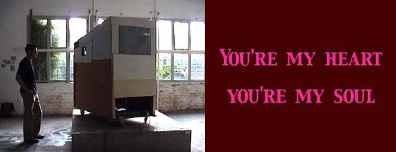

|  |
Com Finally Turns Profitable Nextel Outsources To Stay Focused On Customers Now In Bankruptcy, Kmart Struggled With Supply Chain Data-Analysis Option For Oracle Apps Wartime Allies Link Up At Sea Cities To Spend More On Security More news. . 28, 2002 New Way To Work Visions of the office of the future burn brightly inside the research labs at technology and office-equipment companies. Slender Servers Customer Focus Is Strong, But CRM Vendors' Sales Slip IBM And Microsoft Send Employees Back To School 3Com Offers New Access Devices Vendors Rally Around Mobile Payment Chief Executives Take Notice, Too It's The Battle Of The Web Browsers, Redux Amazon. Com Finally Turns Profitable Nextel Outsources To Stay Focused On Customers Now In Bankruptcy, Kmart Struggled With Supply Chain Data-Analysis Option For Oracle Apps Wartime Allies Link Up At Sea Cities To Spend More On Security More news. |